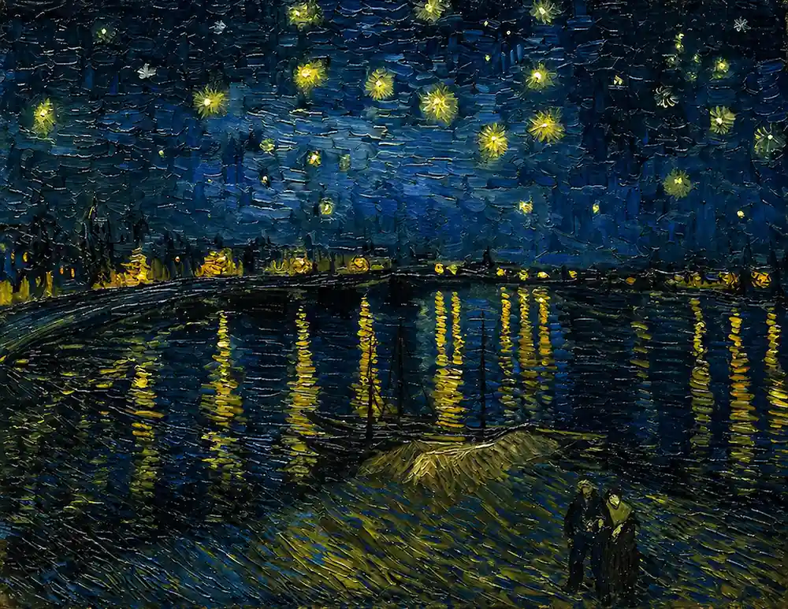
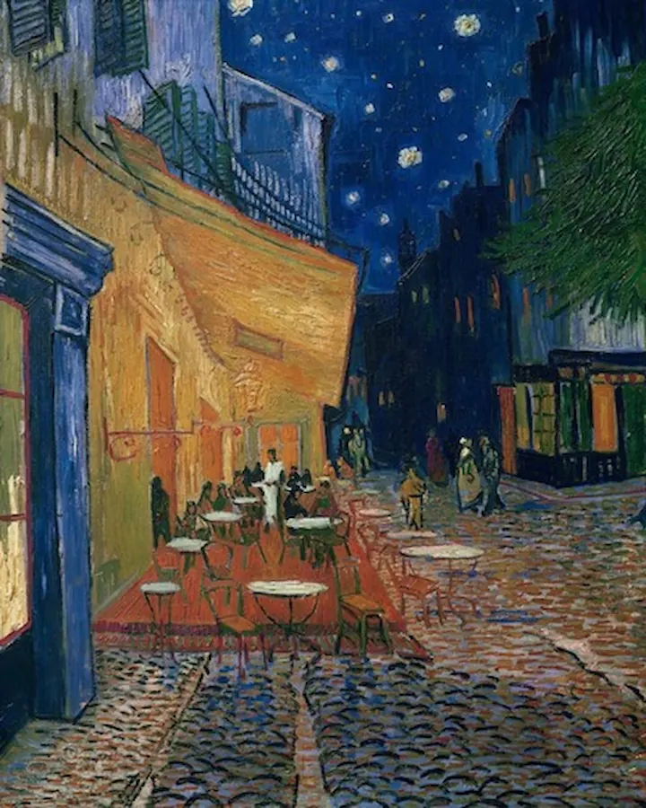
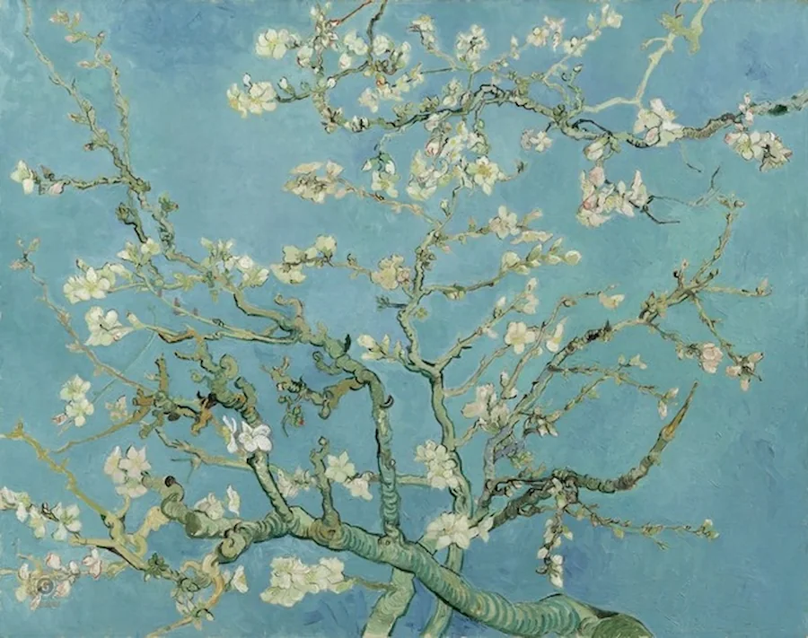
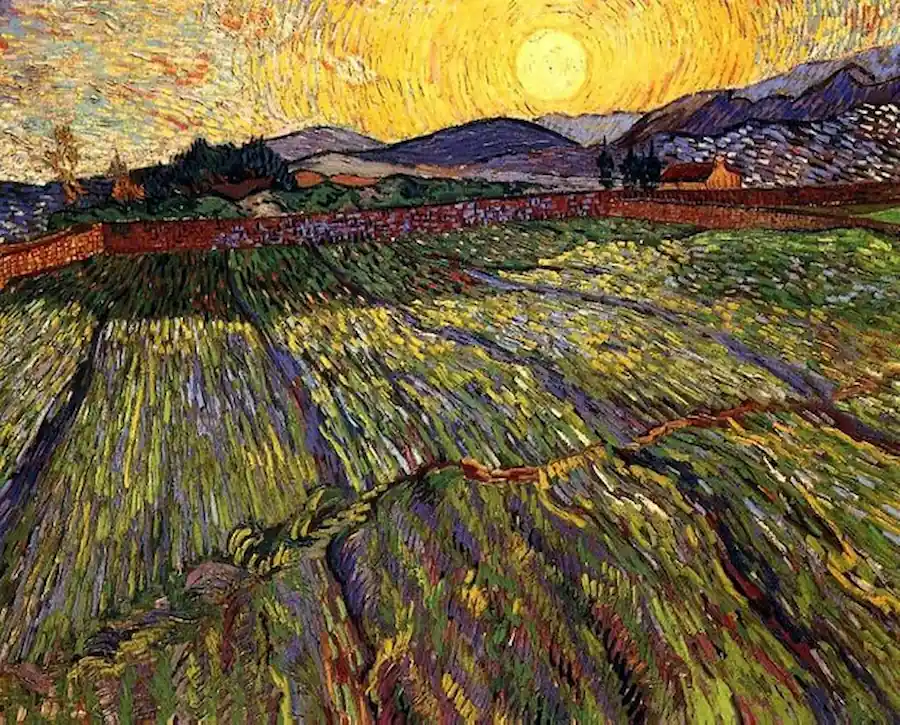
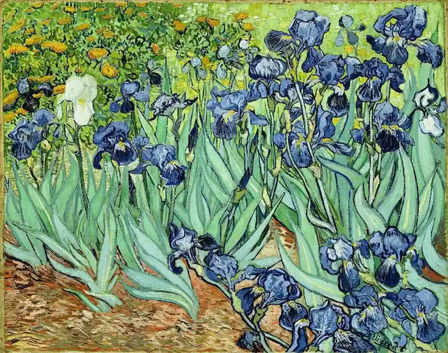
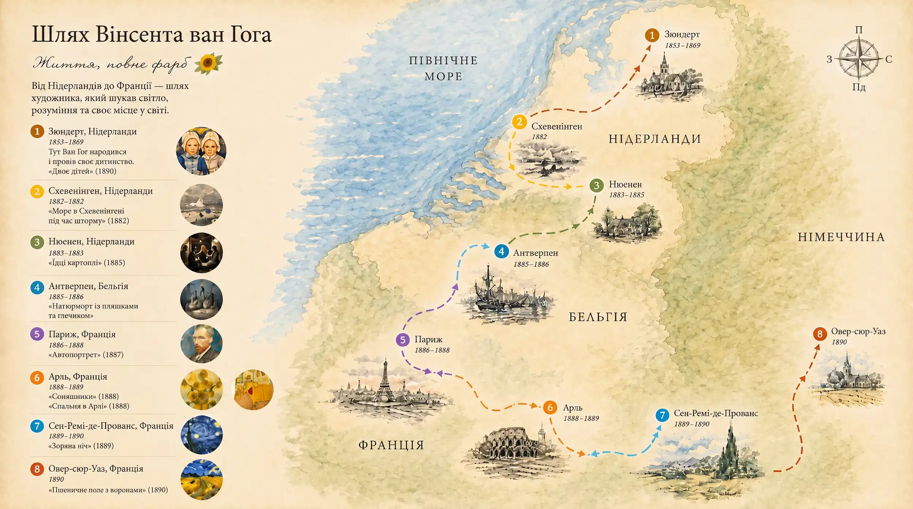

Цей сайт створено як імерсивний досвід, який найкраще працює на великих екранах.
Будь ласка, відкрийте сайт на своєму ноутбуці або ПК для повного занурення.
Van Gogh
Preparing experience
0%






